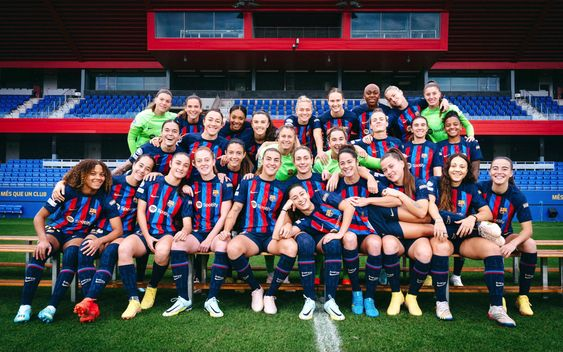

Why watch it?
Watching women's football offers a dynamic and exhilarating experience that showcases exceptional athleticism, skill, and passion on the field. Beyond the thrill of the game itself, supporting women's football is an act of equity and empowerment, promoting gender equality in sports and society at large. By tuning in, you not only witness top-tier competition but also contribute to the visibility and recognition of female athletes who often face disparities in resources and opportunities compared to their male counterparts. Moreover, women's football offers a refreshing perspective on the sport, with its own unique style and narratives, inspiring fans of all ages and genders. Ultimately, watching women's football is not just about the game—it's about celebrating the talent, determination, and resilience of female athletes while advocating for a more inclusive and equitable world.
Current Ballon d'Or

Aitana Bonmati, born on January 18, 1998, has become a highly regarded Spanish footballer known for her outstanding skills and impact in the sport. As a midfielder for both the Spanish national team and FC Barcelona, she has enjoyed remarkable success. Notably, she played a pivotal role in Spain's triumph at the Women's World Cup 2023, where she earned the prestigious title of the tournament's best player. Additionally, Bonmati showcased her talent in the Women's Champions League, earning recognition as the competition's top player. Renowned for her agility, vision, and technical proficiency on the field, she has emerged as a key figure in women's football. Bonmati's ability to control the midfield, create scoring opportunities, and display versatility in her gameplay has earned her widespread acclaim. With her unwavering determination and dedication, she continues to reach significant milestones in her career, garnering admiration from fans and peers alike. It's worth noting that she currently holds the Ballon d'Or, succeeding her teammate Alexia Putellas, who has won the prestigious award twice.
Check out her interview with The Guardian!Best team in the world
The FC Barcelona women's team, often referred to as Barça Femení, stands as a formidable force in women's football, celebrated for its remarkable achievements and prowess on the pitch. Notably, they are the current Champions League title holders, marking their second triumph in the prestigious competition. Established in 1988, the team has solidified its dominance in both Spanish and European football landscapes. With an illustrious history of success, Barça Femení has clinched numerous domestic league titles, Copa de la Reina trophies, and international honors. Renowned for their dynamic playing style and technical finesse, the team showcases a diverse roster of talent, featuring both homegrown sensations and international stars. Guided by exceptional coaching and fueled by unwavering support from their passionate fan base, the FC Barcelona women's team continues to set the bar for excellence in women's football, captivating audiences worldwide with their skill, determination, and dedication to the beautiful game.
Check out their website!